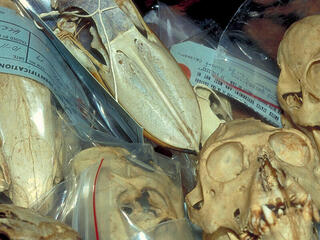
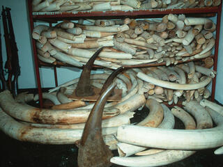

OVERVIEW
Wildlife crime is a big business. Run by dangerous international networks, wildlife and animal parts are
trafficked much like illegal
drugs and arms. By its very nature, it is almost impossible to obtain reliable figures for the value of the
illegal wildlife trade. Experts at
TRAFFIC, the wildlife trade monitoring network, estimate that it runs into billions of dollars.
Some examples of illegal wildlife trade are well known, such as poaching of elephants for ivory and tigers
for their skins and bones.
However, countless other species are similarly overexploited, from marine turtles to timber trees. Not all
wildlife trade is illegal. Wild
plants and animals from tens of thousands of species are caught or harvested from the wild and then sold
legitimately as food, pets, ornamental plants,
leather, tourist ornaments and medicine. Wildlife
trade escalates into a crisis when an increasing proportion is illegal and unsustainable—directly
threatening the survival of many species in the wild.
Stamping out wildlife crime is a priority for WWF because it`s the largest direct threat to the future of
many of the world’s most threatened species.
It is second only to habitat destruction in overall threats against species survival.
CAUSES

As human populations have grown, so has the demand for wildlife. People in many countries are accustomed to
a lifestyle
which fuels demand for wildlife. They expect access to a variety of seafoods, leather goods, timbers,
medicinal ingredients
and textiles. At the other end, extreme poverty means some people see wildlife as valuable barter for trade.
DEMAND DRIVES CRIME........
Rhino horn, elephant ivory and tiger products continue to command high prices among consumers, especially in
Asia. In Vietnam,
the recent myth that rhino horn can cure cancer has led to massive poaching in South Africa and pushed the price
of rhino horn to rival gold.
GAPS IN PROTECTION........
Corruption, toothless laws, weak judicial systems and light sentences allow criminal networks to keep plundering
wildlife with little regard
to consequences. These factors make illegal wildlife trade a low risk business with high returns. The
poachers—often poor locals—are the usually
the only ones caught, leaving the real masterminds and their network safe and operational with the ability to
strike again.
HIGH PROFIT MARGINS........
Illegal wildlife trade is driven by high profit margins and, in many cases, the high prices paid for rare
species. Vulnerable wild animals are
pushed further to the edge of extinction when nature can’t replenish their stocks to keep up with the rate of
human consumption.
IMPACTS

There are certain places in the world where wildlife trade is particularly threatening. These areas are
called “wildlife trade hotspots.”
They include China's international borders, trade hubs in East/Southern Africa and Southeast Asia, the
eastern borders of the European
Union, some markets in Mexico, parts of the Caribbean, parts of Indonesia and New Guinea, and the Solomon
Islands. While these hotspots
might be trouble areas at present, they also offer opportunities for great conservation success, if action
and funds are well-focused.
Wildlife trade alone is a major threat to some species, but its impact is frequently made worse by habitat
loss and other pressures.
ALTERING LIVELIHOODS.....
Local wildlife is considered an important resource by many communities, often the poorest, in the developing
world. Some rural households
depend on wild animals for protein, trees for fuel, and both wild animals and plants for natural cures.
INTERRUPTION OF NATURE.....
Overexploitation of species affects the living planet in wider ways. Just as overfishing causes imbalances
in the whole marine system,
our complex web of life on earth depends on careful and thoughtful use of wildlife species and their
habitats.
INVASIVE SPECIES.....
Many invasive species have been purposely introduced by wildlife traders or buyers. These invasive species
prey on or compete with
native species and are a major threat to the balance of nature. For example pet Burmese pythons let loose by
their owners are now
considered a major pest in Florida`s everglades.
INCIDENTAL KILLING OF NON-TARGET SPECIES......
Like marine species killed through bycatch, incidental killing of animals also happens on land. For example,
crude traps set for musk deer or duikers cause damage and death to a variety of animals besides those intended.
COMPROMISED SECURITY
The very existence of illegal trade undermines efforts made by countries to protect their natural resources.
Illegal wildlife trade is run by criminal networks with wide, international reach. Some traffic illegal drugs,
arms and even people. Recent evidence shows that some networks are also linked to terrorist organizations.